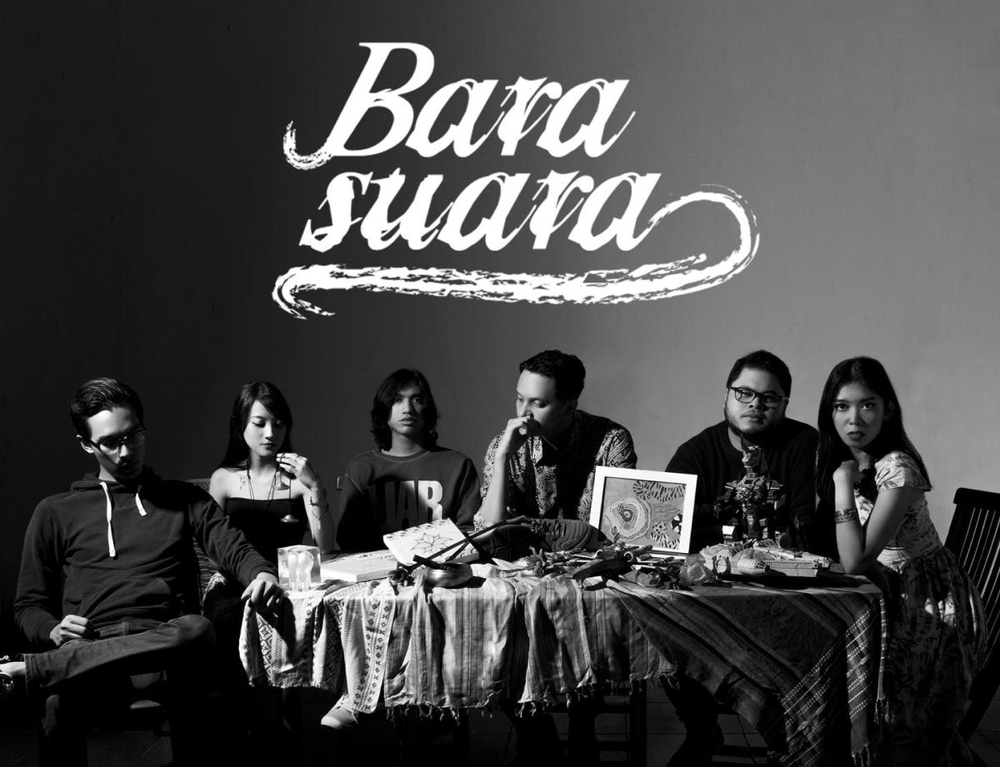
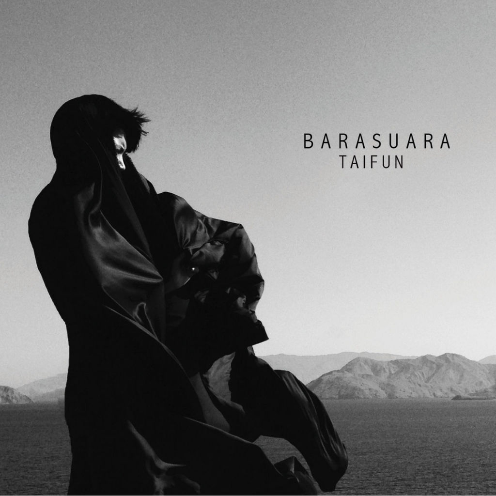

Grup musik Indonesia asal Jakarta yang digawangi oleh Iga Massardi (Vocal, Guitar), TJ Kusuma (Guitar), Gerald Situmorang (Bass), Marco Steffiano (Drum).
Dilengkapi dua penyanyi wanita pengiring, Asteriska dan Puti Chitara. Barasuara diisi oleh personel yang tidak asing lagi di dunia industri musik.
Yang menarik, mereka dari latar musik yang berbeda-beda sehingga tidak heran jika musik Barasuara terasa begitu kaya.
Barasuara sudah ada sejak 2011, ketika Iga masih menjadi gitaris grup pop Soulvibe. Sebelumnya dia dikenal sebagai pendiri The Trees & The Wild dan
keluar karena alasan yang masih enggan disebutkan.

Setelah menemukan formasi yang solid di akhir 2012, mereka terus latihan dan rekaman tanpa manggung sekali pun atau mengunggah musik apa pun,
walau banyak yang bertanya-tanya ke akun Twitter Bara yang cukup aktif menginformasikan kegiatan mereka.
“Sebetulnya di bulan-bulan pertama Barasuara latihan sudah bisa manggung secara teknis. Cuma, band yang bermain tiga bulan dengan band yang bermain
tiga tahun kan punya hasil yang berbeda,” kata Iga, yang mengundurkan diri dari Soulvibe di akhir 2013.
Untuk band baru yang hendak didirikannya ini, Iga memutuskan untuk tak hanya menjadi gitaris, tapi juga vokalis dan penulis lirik.
Untuk transisi menjadi vokalis ini, Iga mencari inspirasi dari The Libertines, Albert Hammond Jr., The Strokes, dan Jack White.
Orang pertama yang diajak dalam band baru ini adalah Sandi Kusumaningtyas, diberi nama panggilan TJ (dibaca Tije) oleh teman sekelas di
SD yang terbawa euforia menjuarai kompetisi sepak bola di sekolah. “Gue pilih TJ karena sebetulnya gue dan TJ berangkat sebagai teman main biasa saja,
dan dia rekan yang enak banget,” kata Iga, yang memperdengarkan sebuah ide lagu belum berjudul dan kelak menjadi “Nyala Suara”.
“Begitu gue dengar, langsung merinding dan jatuh cinta,” kataTJ, yang masih tergabung di grup electronic rock LCD Trip setelah sempat bermain
di band-band beraliran ska dan funk rock.

Berikutnya adalah mencari drummer. Pilihannya jatuh kepada Marco Steffiano Handoko, yang sudah bekerja sebagai drummer pengiring penyanyi pop Raisa dan
kini juga menjadi music director. “Pengalaman gue adalah band bagus harus punya drummer yang bagus. Akhirnya gue coba Marco dan mengajak dia.
Agak khawatir juga, karena Marco nggak mendengarkan musik yang gue dengarkan,” kata Iga. “Terlepas dari perbedaan selera, yang penting punya satu spirit yang sama".
" Hal yang ingin kau lupa "
Barasuara - Mengunci Ingatan
Setelah sempat ada kendala mengisi posisi pemain bas dengan orang yang dapat diandalkan untuk datang tepat waktu saat latihan,
tiba-tiba Marco punya ide untuk mengajak Gerald Hiras Situmorang. Lokasi rumah Gerald kebetulan dekat tempat latihan mereka.
Pilihan ini tergolong ajaib, karena Gerald sudah dikenal sebagai gitaris muda berbakat yang sudah biasa bermain dengan para legenda jazz seperti Indra Lesmana,
Tohpati dan Dewa Budjana, dan punya berbagai proyek seperti Sketsa, Hemiola Quartet, Bag+Beat, dan Gerald Situmorang Trio.
Sehingga jadilah musik yang mereka mainkan berupa daur ulang dari nafas psychedelic, rock, folk, blues dan jazz dengan lirik Indonesia yang kental.
Barasuara mengedepankan ritme dan energi yang menerjang adrenalin dengan lirik yang bercerita tentang memori, semangat dan kemerdekaan pikiran.
Iga, sebagai penggagas band ini mengaku tidak bisa mendefinisikan jenis musik yang mereka sajikan.
"Kalau secara jenis musik, saya tidak bisa jelaskan persisnya apa. Biarkan nanti kami bicara lewat musik lalu silahkan dinilai sendiri seperti apa
konsep musik yang kami bawakan," jelasnya.
Sementara itu nama band pun diganti karena pada suatu hari Iga menyadari sudah ada beberapa band di Indonesia yang menamakan diri Bara.
“Di hari itu gue pusing luar biasa. Sudah jalan beberapa bulan, hampir setahun,” katanya. “Gue tadinya mau menamakan Bara ini, Bara itu.
Kalau Bara Nada seperti sanggar, kalau Bara Aksara seperti toko buku. Jadi gue coba yang paling musikal: Barasuara.”
Dan akhirnya pada tanggal 8 Juni 2014 Barasuara manggung untuk pertama kalinya di Tokove.
Anggota Band:
Iga Massardi [Vocal & Guitar]
TJ Kusuma [Guitar]
Gerald Situmorang [Bass]
Marco Steffiano [Drum]
Asteriska [Vocal]
Puti Chitara [Vocal]

Song by : Barasuara - Nyala Suara